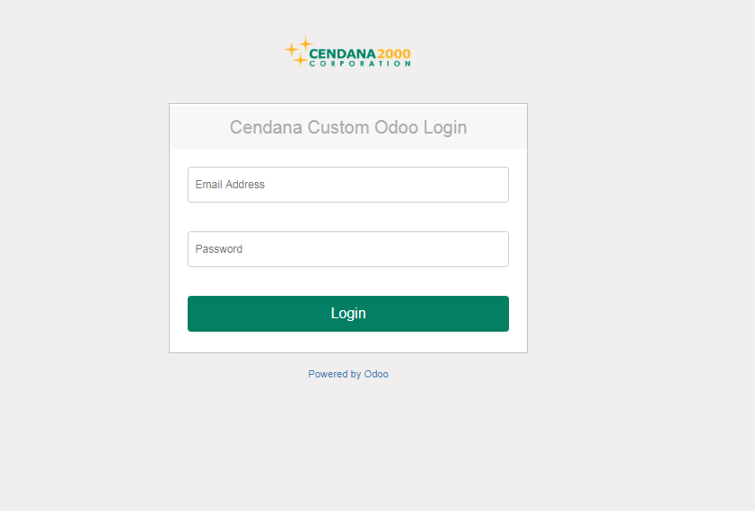
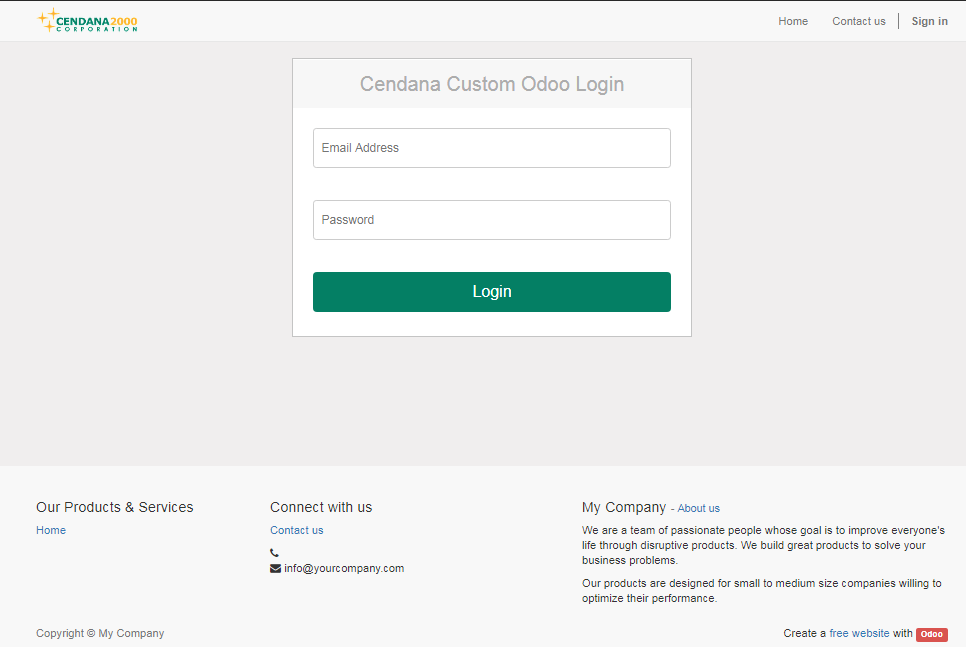

<section class="oe_container">
    <div class="oe_row oe_spaced">
        <h3 class="oe_slogan" style="color:#048065;"><strong>Customize Odoo Login Page</strong></h3>
        <p class="oe_mt32" style="color:#048065;">
            This app will modificate your odoo login page. 
        </p>
        <p style="color:CRIMSON;"><b>
            Main Features:
        </p>
        <p style="color:#048065;">
            - Modificate/custom Odoo Login Page<br>
            - Remove Button Manage database<br>
			- Minimum settings, install and everthing about login page will be changed<br>
     
        </p>
		<div class="oe_demo oe_screenshot" style="width:85%;">
           
		   
       </div>
	   <br />
	   <div class="oe_demo oe_screenshot" style="width:85%;">
           
		   
       </div>

    </div>
</section>


